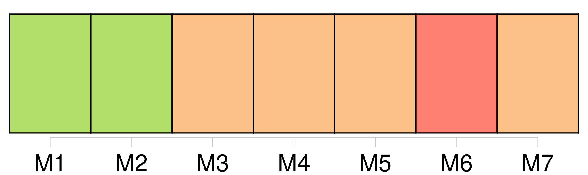
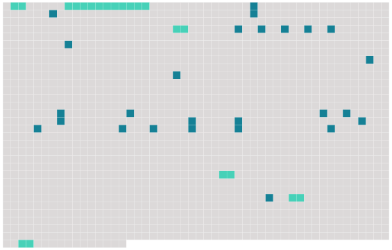

Longueur nb maillons : 32 mentions |
  |
Et [cinq femmes] descendirent sur le perron, [cinq belles filles choisies avec soin par un camarade du capitaine] à qui XXXLe DevoirXXX était allé porter une carte de son officier. [Elles] ne s'étaient point fait prier, sûres d'être bien payées, connaissant d'ailleurs les Prussiens, depuis trois mois qu' [elles] en tâtaient, et prenant leur parti des hommes comme des choses.
« C'est le métier qui veut ça », se disaient [-elles] en route, pour répondre sans doute à quelque picotement secret d'un reste de conscience. [2 phrases]
Le capitaine, radieux, s'empara [des femmes] comme d'une chose familière, [les] appréciant, [les] embrassant, [les] flairant, [les] évaluant à [leur] valeur de filles à plaisir ; et comme les trois jeunes gens voulaient en prendre chacun une, il s'y opposa avec autorité, se réservant de faire le partage, en toute justice, suivant les grades, pour ne blesser en rien la hiérarchie. Alors, afin d'éviter toute discussion, toute contestation et tout soupçon de partialité, il [les] aligna par rang de taille, et s'adressant à la plus grande, avec le ton du commandement : « Ton nom?? [3 phrases]
[Toutes] , d'ailleurs, étaient jolies et grasses, sans physionomies bien distinctes, faites à peu près pareilles de tournure et de peau par les pratiques d'amour quotidiennes et la vie commune des maisons publiques. Les trois jeunes gens prétendaient tout de suite entraîner leurs femmes, sous prétexte de leur offrir des brosses et du savon pour se nettoyer ; mais le capitaine s'y opposa sagement, affirmant qu' [elles] étaient assez propres pour se mettre à table et que ceux qui monteraient voudraient changer en descendant et troubleraient les autres couples. [9 phrases] [Elles] ne comprenaient rien, du reste ; et [leur] intelligence ne sembla s'éveiller que lorsqu'il cracha des paroles obscènes, des expressions crues, estropiées par son accent. Alors, [toutes] ensemble, [elles] commencèrent à rire comme des folles, tombant sur le ventre de [leurs] voisins, répétant les termes que le baron se mit alors à défigurer à plaisir pour [leur] faire dire des ordures.
[Elles] en vomissaient à volonté, saoules aux premières bouteilles de vin ; et, redevenant [elles] , ouvrant la porte aux habitudes, [elles] embrassaient les moustaches de droite et celles de gauche, [pinçaient] les bras, [poussaient] des cris furieux, [buvaient] dans tous les verres, [chantaient] des couplets français et des bouts de chansons allemandes appris dans [leurs] rapports quotidiens avec l'ennemi. [8 phrases]
Le commandant se leva, et du même ton qu'il aurait pris pour porter la santé de l'impératrice Augusta, il but : [5 phrases]
» [15 phrases] [Les filles] ne protestaient point, réduites au silence et prises de peur. |
 |
La ressource peut être téléchargée sur la page Ortolang
Si vous avez des questions ou vous voyez des erreurs, merci d'envoyer un mail à silvia.federzoni89@gmail.com
Site développé par S. Federzoni (contact)